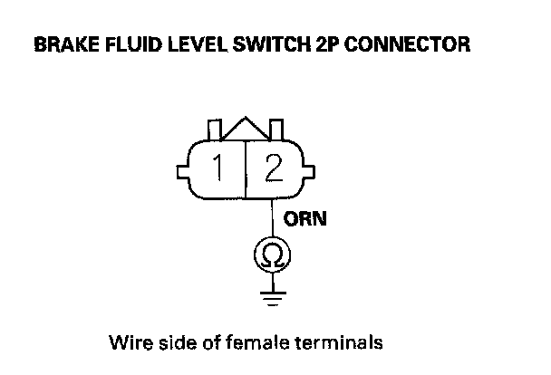

DTC 65-21
DTC 65-21: Brake Fluid Level Stuck ON1. Turn the ignition switch ON (II).
2. Clear the DTC with the HDS.
3. Turn the ignition switch OFF, then turn it ON (II) again.
4. Check for DTCs with the HDS.
Is DTC 65-21 indicated?
YES - Go to step 5.
NO - Intermittent failure, the system is OK at this time.
5. Release the parking brake.
6. Turn the ignition switch OFF, then turn it ON (II) again.
7. Check the brake system indicator in the gauge control module (tach).
Does the indicator come on then go off?
YES - Go to step 8.
NO - Go to step 9.
8. Check the FLUID LEVEL in the VSA DATA LIST with the HDS while moving the brake fluid reservoir tank float.
Does it indicate ON when the float is lowered and OFF when the float is raised?
YES - Intermittent failure, the system is OK at this time.
NO - Replace the VSA modulator-control unit.
9. Check the brake fluid level in the master cylinder reservoir tank.
Is the brake fluid level OK?
YES - Go to step 10.
NO - Do the brake pad inspection: Front, rear, check for brake fluid leaks or replace worn pads, then go to step 1 and recheck.
10. Check the FLUID LEVEL in the VSA DATA LIST with the HDS while moving the brake fluid reservoir tank float.
Does it indicate ON when the float is lowered and OFF when the float raised?
YES - Go to step 11.
NO - Replace the brake fluid reservoir tank (brake fluid level switch is included).
11. Turn the ignition switch OFF.
12. Disconnect the gauge control module (tach) 36P connector.
13. Disconnect the brake fluid level switch 2P connector.
14. Check for continuity between brake fluid level switch 2P connector terminal No. 2 and body ground.

Is there continuity?
YES - Repair short to body ground in the wire between the gauge control module (tach) and the brake fluid level switch.
NO - Substitute a known-good gauge control module (tach), then go to step 1 and recheck. If no DTCs are indicated, replace the original gauge control module (tach).